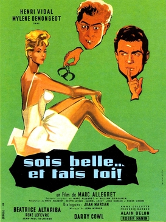

Delphine Seyrig
1981
110 minutes
The French title of this translates to "shut up and be pretty". This is a documentary directed by French super-babe Delphine Seyrig, who also starred in Last Year at Marienbad, Jeanne Dielman, etc and (most importantly) Mr. Freedom. The film deals with the experiences of women actors and includes lots of interviews with them about their positive and negative experiences in the film industry and the challenges and discrimination they faced. Most of it is in French, and you're pleasantly surprised to see an interview with Jane Fonda, whose French is remarkably good.
You grew up in Indiana in the era of the Superstations, and you were mostly aware of Jane Fonda as TNT Ted Turner's woman. Many of the macho men around you very much disliked Jane Fonda because of all the Vietnam shit that you didn't really understand but couldn't argue with. You mostly had a generally negative reaction to her (at least before seeing Barbarella) because of her frequent appearance with Ted at Braves games, which were endlessly broadcast on TNT.
You were never a huge baseball fan, but most of your classmates were fans of either the Reds (nope) or the Chicago teams. And WGN was a pretty major part of your cable viewing as well. You felt quite a bit of brand loyalty to the station and to the city. WGN in particular formed a key part of your holiday viewing around Christmastime. They would play two creepy stop-motion animation in particular from the 1950s. One was a general wintertime cartoon about Suzy Snowflake. The other was a Christmas-specific stop-motion animation that appeared to be made of cheap puppets which featured Santa and his elves named Hardrock and Coco and...Joe. The elves would kit out Santa's sleigh and get into mischief, throwing snowballs at each other while Santa performed his obligations. Both of these were accompanied by rather creepy old tunes. As an adult, you have discovered that no one outside the immediate Chicago area seems to have any idea what the fuck you are talking about when you get nostalgic for these pieces of media, and they look at you like some sort of an alien when you force them to sit down and watch Youtube videos of these.
Slightly more people seem to know Chicago horror host Svengoolie, which did not air on WGN in this weird cursed Berenstain Bears universe. You loved this but when you were at home you were somewhat more likely to watch Sammy Terry, the scarier and somewhat less goofy Indianapolis version of the same thing.
Time to choose something different: